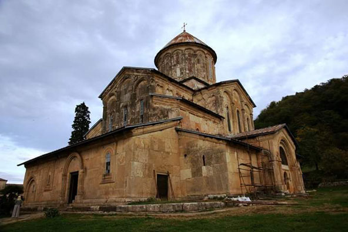
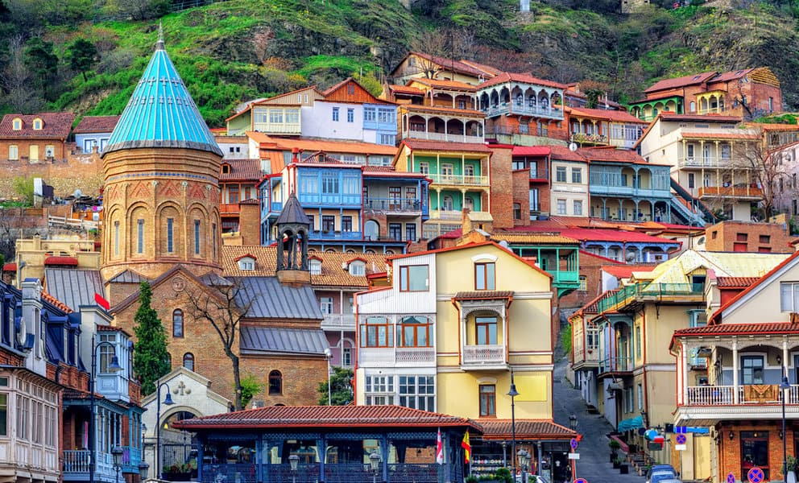
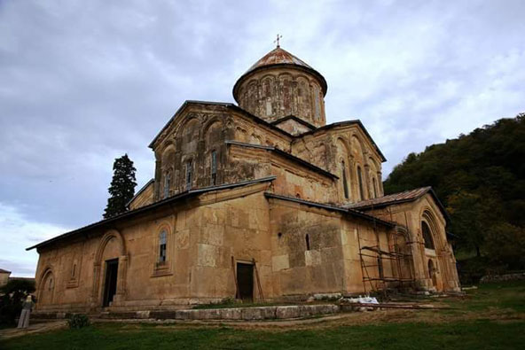
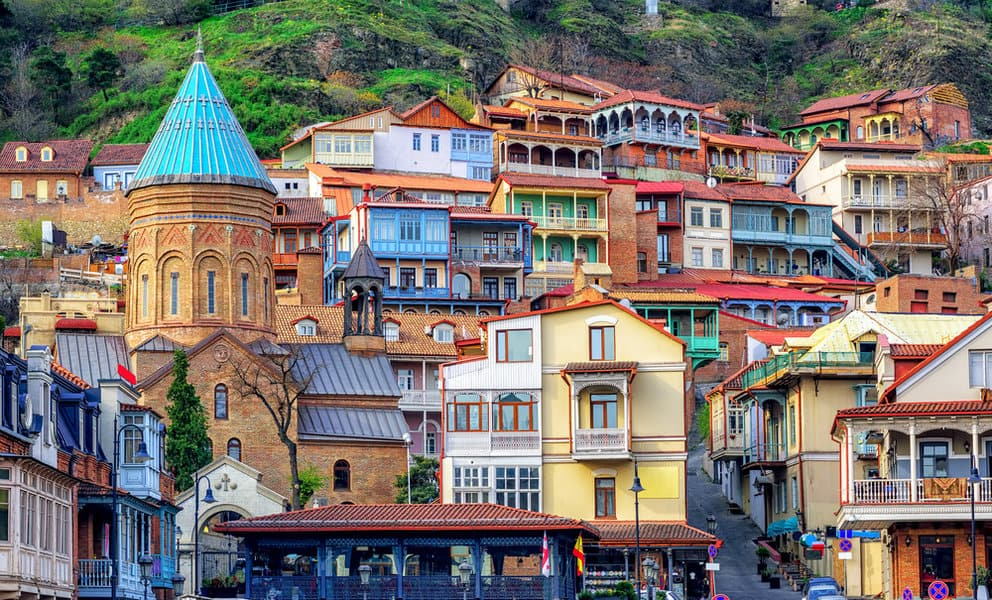

תחביביי
התחביב האהוב עליי ביותר הוא בישול ואפייה, במיוחד כשמדובר במטבח הגרוזיני האותנטי. מאז ומתמיד אני מכינה בסבלנות ובאהבה מאכלים מסורתיים, שהפכו לחלק בלתי נפרד מהשגרה שלי מדי שבוע. אני גם נהנית גם מהכנת עוגות וקינוחים גרוזיניים עשירים בטעמים ובמסורת. בנוסף לאהבתי למטבח, אני חובבת גדולה של תוכניות ריאליטי. בתקופות שבהן הריאליטי בשיאו, תוכלו למצוא אותי מרותקת למסך, עוקבת בדריכות אחרי כל התפתחויות העלילה. אחת מהנאותיי הגדולות היא לנתח את האירועים עם נכדתי לאחר כל פרק, להחליף דעות ולחזות את מהלך העונה בעקבותיהן. מעבר לכך, אני נהנית לקחת חלק בשיעורי תורה שכונתיים, בהם אני פוגשת חברות קרובות. המפגשים האלה הם הזדמנות נפלאה לשיח מעשיר באווירה נעימה וחמה, לצד כיבוד ביתי שאנחנו מביאות מהבית. יחד אנחנו יושבות סביב השולחן, מקשיבות, לומדות ונהנות מהחברה ומהתוכן המרתק.